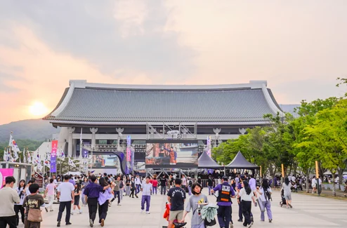
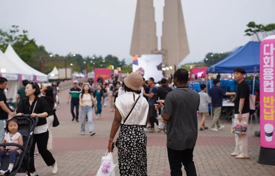
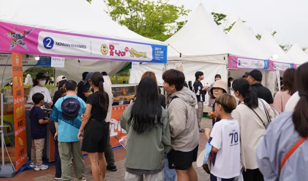
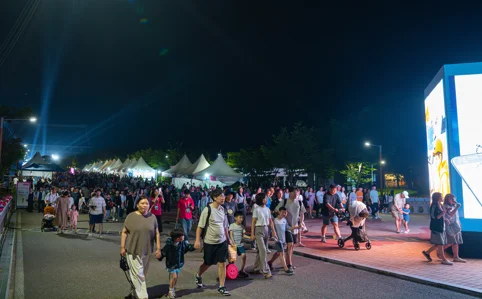
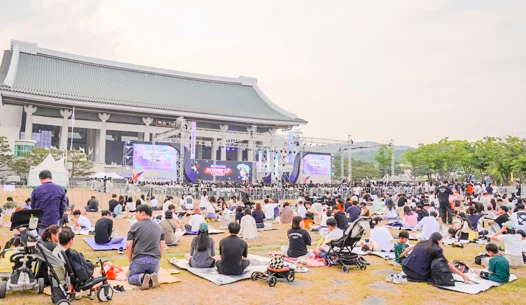

▲ 2026 천안 K-컬처박람회는 9월 2일부터 6일까지 독립기념관 일원에서 열린다 ⓒ 천안 K-컬처박람회 조직위원회
1. 지금 진행 중, 닷새간의 무료 행사
2026 천안 K-컬처박람회는 9월 2일(수)부터 6일(일)까지 닷새간 독립기념관 일원에서 열립니다. '케이-컬처, 세계의 중심에 서다'를 주제로 매일 오전 10시 개막하며, 입장료는 무료입니다.
구성은 K-푸드, K-웹툰을 비롯한 K-컬처 전시와 공연 프로그램, 그리고 글로벌 문화 페스타입니다. 3년째 이어지는 행사로, 올해 예상 관람객은 약 43만 명에 이릅니다.

▲ 독립기념관 상징탑 앞 광장. 행사 기간 내내 이 일대로 인파가 몰린다 ⓒ 천안 K-컬처박람회 조직위원회
즉 오늘도, 내일도 이 인파는 계속됩니다. 43만 명이 닷새에 걸쳐 나뉜다고 해도 하루 평균 8만 명이 넘는 규모이니, 어느 요일에 가더라도 붐빈다는 전제로 계획을 세우는 편이 안전합니다.
2. 주차 공간 3,845면 — 지난해보다 임시주차장 2곳 늘렸다

▲ 낮 시간대 부스 구역. 프로그램이 몰리는 시간대일수록 주차장 회전율도 함께 떨어진다 ⓒ 천안 K-컬처박람회 조직위원회
천안시가 올해 확보한 주차 공간은 총 3,845면입니다.
| 구분 | 규모 |
|---|---|
| 독립기념관 기존 주차장 | 1,330면 |
| 임시주차장 7곳(목천제1공영주차장·서곡캠핑장 등) | 2,515면 |
| 합계 | 3,845면 |
임시주차장은 지난해보다 2곳을 더 늘린 결과입니다. 그만큼 매년 주차 수요가 공급을 앞질러 왔다는 뜻이기도 합니다. 주요 회전교차로에는 드론 영상과 주차 정보를 연계한 영상안내차량을 배치해 실시간 상황을 안내합니다.
임시주차장에서 행사장까지는 내부순환버스 4대가 오갑니다. 기존 주차장과 달리 임시주차장은 행사장과 다소 거리가 있는 만큼, 이 순환버스 운행 여부를 미리 확인해 두는 것이 좋습니다.
3. 시내 셔틀 109회, 그리고 유료 셔틀 두 종류

▲ 야간에도 행사장 인파는 줄지 않는다. 공연이 끝난 직후가 귀갓길이 가장 몰리는 시간대다 ⓒ 천안 K-컬처박람회 조직위원회
대중교통으로 접근한다면 시내 셔틀버스가 기본 수단입니다. 총 109회 운행되며 3개 코스로 나뉩니다.
| 코스 | 구간 |
|---|---|
| 1코스 | 천안터미널 ↔ 천안역 |
| 2코스 | 천안아산역 ↔ 천안시청 |
| 3코스 | 두정동 ↔ 쌍용동 |
관람객이 몰리는 시간대에는 배차 간격이 15분까지 좁혀집니다. 공연이 끝나 한꺼번에 사람이 빠져나가는 시간대를 고려한 조치입니다.
여기에 유료 셔틀 두 종류가 더해집니다. 카카오T 앱으로 예약할 수 있는 유료 셔틀버스와, 수도권과 행사장을 잇는 외국인 전용 유료 셔틀버스입니다. 공연 종료 후에는 독립기념관에서 시내로 향하는 임시 노선도 별도로 편성됩니다.
천안 K-컬처박람회 공식 홈페이지에서 교통 정보 확인하기
4. 폭염과 인파, 두 가지 변수를 관리한다

▲ 겨레의집 앞에서 열리는 공연. 잔디밭에 자리를 잡고 관람하는 방식이라 저녁 시간대에 특히 인파가 집중된다 ⓒ 천안 K-컬처박람회 조직위원회
9월 초 야외 행사인 만큼 폭염과 인파 관리가 함께 다뤄지고 있습니다. 행정안전부의 인파밀집 관리시스템을 활용해 실시간 밀집도를 확인하고, 소방·경찰·보건소가 참여하는 종합상황실도 운영됩니다.
더위를 피할 수 있는 냉방쉼터는 6곳이 마련됩니다. 식품 안전을 위한 현장 점검도 하루 2회 이상 이뤄집니다. 외국인 관람객을 위한 영어·중국어 통역 서비스와 휠체어·유아차 대여도 제공되니, 필요하다면 현장 안내소를 이용하면 됩니다.
5. 정리 — 지금 간다면 이렇게
첫째, 기존 주차장(1,330면)을 목표로 하되 안 되면 바로 임시주차장으로 전환하십시오. 3,845면이라는 숫자는 여유 있어 보이지만, 43만 명이 닷새 동안 나눠 오는 규모를 감안하면 특정 시간대엔 순식간에 채워질 수 있습니다.
둘째, 임시주차장을 이용한다면 내부순환버스 운행 여부와 위치를 먼저 확인하십시오. 행사장과 거리가 있는 만큼 순환버스 없이는 도보 이동이 부담스러울 수 있습니다.
셋째, 대중교통이 가능하다면 시내 셔틀 109회를 적극 활용하는 편이 낫습니다. 혼잡 시간대엔 15분 간격으로 다니기 때문에, 자차보다 예측 가능한 이동 수단이 될 수 있습니다.
넷째, 저녁 공연 관람을 계획한다면 귀갓길 혼잡까지 미리 감안하십시오. 잔디밭에 앉아 보는 공연 특성상 종료 시점에 인파가 한꺼번에 몰립니다.